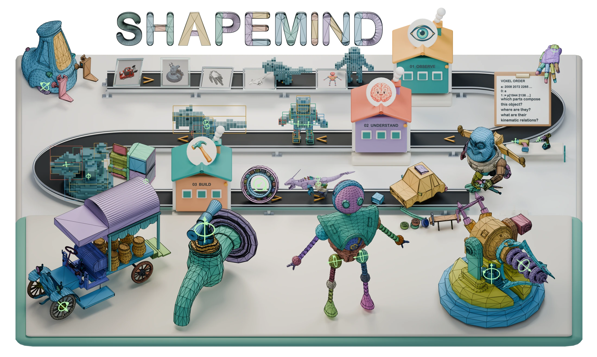
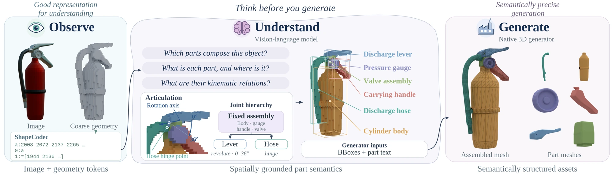

Observe
An image supplies appearance. ShapeCodec turns coarse 3D occupancy into compact text tokens.
IMAGE + COARSE GEOMETRYNative 3D Understanding and Generation
of Semantically Structured 3D Assets
Understand the parts. Generate the geometry.
Bring the structure to life.

From visual evidence to meaningful, editable, movable parts.
ShapeVLM + Semantic PartGenTHE IDEA
3D assets need more than a surface.
They need to know what they are made of.
ShapeMind generates low-poly 3D assets with explicit semantic part structure and, where applicable, kinematic structure. ShapeVLM reasons over an image and coarse geometry encoded as ordinary text. Its predicted part boxes, labels, and descriptions guide Semantic PartGen to create native triangle meshes, with each part independently editable.

An image supplies appearance. ShapeCodec turns coarse 3D occupancy into compact text tokens.
IMAGE + COARSE GEOMETRYShapeVLM predicts semantic parts, their locations, and how groups of parts move together.
PARTS + KINEMATICSSemantic PartGen jointly generates part vertices and topology in one shared object frame.
NATIVE PART MESHES01 / STRUCTURE IN MOTION
From predicted voxels to generated meshes,
the articulated structure stays connected.
Selected ShapeMind outputs from PhysX-Bench. Both views use the same predicted joint graph and ranges. Playback is a kinematic visualization, not a physics simulation.
02 / NATIVE GEOMETRY
Explore the actual surfaces and topology.
Each color is a separate, editable component.
FROM GENERATED PARTS TO ARTICULATION
The original 32 meshes become five articulated fingers. Each finger bends around the centers of its generated joints, following a three-joint hierarchy.
Articulation authored on the existing generated geometry. Joint pivots are fitted to the named joint meshes; the original triangles are unchanged.
One continuous render: the generated hand opens and closes, then reveals its original triangle edges.
Selected meshes from the supplied Blender gallery. Wireframe follows the original triangle edges; no remeshing or subdivision is applied. Exploded views only translate parts for inspection.
03 / AGENT-DIRECTED CREATION
An agent can speak the same part interface:
an image, semantic descriptions, and 3D boxes.
Independent agents design complex objects, generate reference images, plan semantic parts and joint hierarchies, then call Semantic PartGen. The generated components are bound to those agent-authored joints to create articulated assets.
The agent supplies part conditions and the kinematic graph; these examples bypass ShapeVLM. Semantic PartGen generates the meshes. Joints are agent-authored and aligned to the actual output geometry. Playback demonstrates kinematics, not a dynamics simulation.